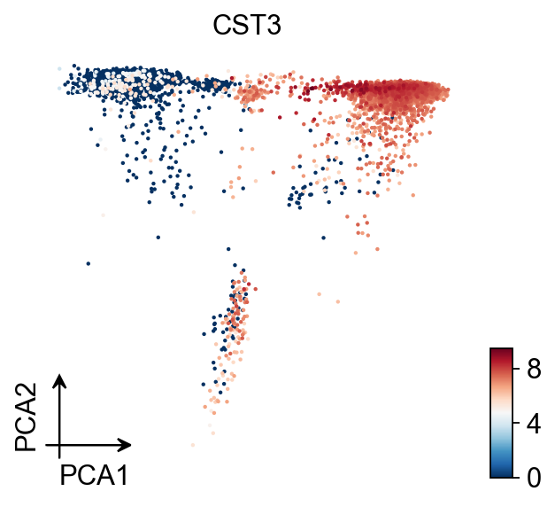
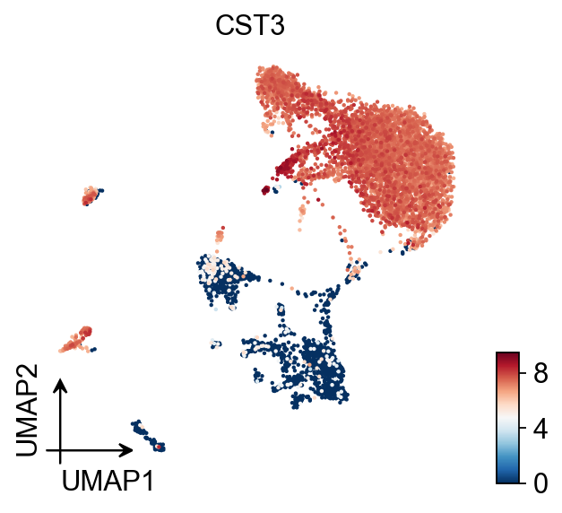
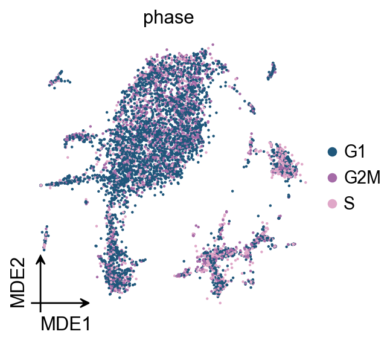
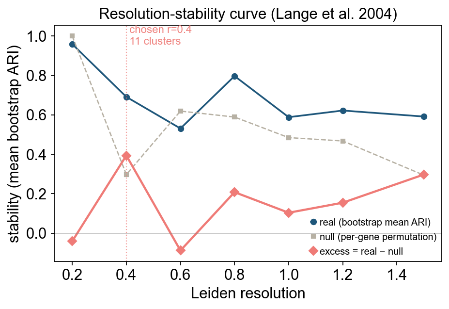
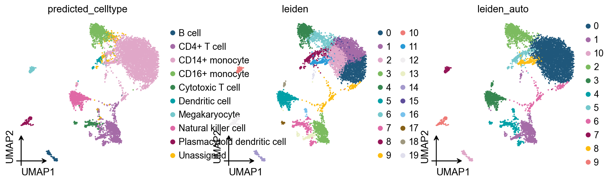

Preprocessing the data of scRNA-seq with omicverse[CPU-GPU-mixed]#
The count table, a numeric matrix of genes × cells, is the basic input data structure in the analysis of single-cell RNA-sequencing data. A common preprocessing step is to adjust the counts for variable sampling efficiency and to transform them so that the variance is similar across the dynamic range.
Suitable methods to preprocess the scRNA-seq is important. Here, we introduce some preprocessing step to help researchers can perform downstream analysis easyier.
User can compare our tutorial with scanpy’tutorial to learn how to use omicverse well
Colab_Reproducibility：https://colab.research.google.com/drive/1DXLSls_ppgJmAaZTUvqazNC_E7EDCxUe?usp=sharing
import scanpy as sc
import omicverse as ov
ov.plot_set(font_path='Arial')
# Enable auto-reload for development
%load_ext autoreload
%autoreload 2
🔬 Starting plot initialization...
Using already downloaded Arial font from: /tmp/omicverse_arial.ttf
Registered as: Arial
🧬 Detecting GPU devices…
✅ NVIDIA CUDA GPUs detected: 1
• [CUDA 0] NVIDIA H100 80GB HBM3
Memory: 79.1 GB | Compute: 9.0
____ _ _ __
/ __ \____ ___ (_)___| | / /__ _____________
/ / / / __ `__ \/ / ___/ | / / _ \/ ___/ ___/ _ \
/ /_/ / / / / / / / /__ | |/ / __/ / (__ ) __/
\____/_/ /_/ /_/_/\___/ |___/\___/_/ /____/\___/
🔖 Version: 2.1.2rc1 📚 Tutorials: https://omicverse.readthedocs.io/
✅ plot_set complete.
Note
“When OmicVerse is upgraded to version > 1.7.0, it supports CPU–GPU mixed acceleration without requiring rapids_singlecell as a dependency—enjoy faster single-cell analysis!”
ov.settings.cpu_gpu_mixed_init()
CPU-GPU mixed mode activated
Available GPU accelerators: CUDA
Load the PBMC 8k 10x dataset bundled with omicverse (ov.datasets.pbmc8k() downloads on first call, then caches):
# Load PBMC 8k from omicverse's bundled datasets
adata = ov.datasets.pbmc8k()
adata.var_names_make_unique()
adata.obs_names_make_unique()
adata
🩸 Downloading PBMC 8k dataset
Using Stanford mirror for pbmc8k
⚠️ File ./data/pbmc8k.h5ad already exists
Loading data from ./data/pbmc8k.h5ad
✅ Successfully loaded: 7750 cells × 20939 genes
AnnData object with n_obs × n_vars = 7750 × 20939
obs: 'kit', 'tissue_ontology_term_id', 'tissue_type', 'assay_ontology_term_id', 'disease_ontology_term_id', 'cell_type_ontology_term_id', 'self_reported_ethnicity_ontology_term_id', 'development_stage_ontology_term_id', 'sex_ontology_term_id', 'donor_id', 'suspension_type', 'predicted_celltype', 'is_primary_data', 'cell_type', 'assay', 'disease', 'sex', 'tissue', 'self_reported_ethnicity', 'development_stage', 'observation_joinid'
var: 'gene_name', 'feature_name', 'feature_reference', 'feature_biotype', 'feature_length', 'feature_type'
obsm: 'UMAP', 'X_pca', 'X_umap'
Preprocessing#
Quantity control#
For single-cell data, we require quality control prior to analysis, including the removal of cells containing double cells, low-expressing cells, and low-expressing genes. In addition to this, we need to filter based on mitochondrial gene ratios, number of transcripts, number of genes expressed per cell, cellular Complexity, etc. For a detailed description of the different QCs please see the document: https://hbctraining.github.io/scRNA-seq/lessons/04_SC_quality_control.html
Note
if the version of omicverse larger than 1.6.4, the doublets_method can be set between scrublet and sccomposite.
COMPOSITE (COMpound POiSson multIplet deTEction model) is a computational tool for multiplet detection in both single-cell single-omics and multiomics settings. It has been implemented as an automated pipeline and is available as both a cloud-based application with a user-friendly interface and a Python package.
Hu, H., Wang, X., Feng, S. et al. A unified model-based framework for doublet or multiplet detection in single-cell multiomics data. Nat Commun 15, 5562 (2024). https://doi.org/10.1038/s41467-024-49448-x
%%time
adata=ov.pp.qc(
adata,
tresh={'mito_perc': 0.2, 'nUMIs': 500, 'detected_genes': 250},
doublets_method='scrublet',
batch_key=None,
filter_doublets=True,
)
adata
⚙️ Using CPU/GPU mixed mode for QC...
NVIDIA CUDA GPUs detected:
📊 [CUDA 0] NVIDIA H100 80GB HBM3
------------------------------ 1109/81559 MiB (1.4%)
🔍 Quality Control Analysis (CPU-GPU Mixed):
Dataset shape: 7,750 cells × 20,939 genes
QC mode: seurat
Doublet detection: scrublet
Auto-detected mitochondrial prefix: 'MT-'
Mitochondrial genes: MT-
📊 Step 1: Calculating QC Metrics
✓ Gene Family Detection:
┌──────────────────────────────┬────────────────────┬────────────────────┐
│ Gene Family │ Genes Found │ Detection Method │
├──────────────────────────────┼────────────────────┼────────────────────┤
│ Mitochondrial │ 13 │ Auto (MT-) │
├──────────────────────────────┼────────────────────┼────────────────────┤
│ Ribosomal │ 99 │ Auto (RPS/RPL) │
├──────────────────────────────┼────────────────────┼────────────────────┤
│ Hemoglobin │ 7 │ Auto (regex) │
└──────────────────────────────┴────────────────────┴────────────────────┘
✓ QC Metrics Summary:
┌─────────────────────────┬────────────────────┬─────────────────────────┐
│ Metric │ Mean │ Range (Min - Max) │
├─────────────────────────┼────────────────────┼─────────────────────────┤
│ nUMIs │ 5454 │ 497 - 34434 │
├─────────────────────────┼────────────────────┼─────────────────────────┤
│ Detected Genes │ 2071 │ 35 - 6427 │
├─────────────────────────┼────────────────────┼─────────────────────────┤
│ Mitochondrial % │ 2.9% │ 0.0% - 97.2% │
├─────────────────────────┼────────────────────┼─────────────────────────┤
│ Ribosomal % │ 20.4% │ 0.1% - 52.8% │
├─────────────────────────┼────────────────────┼─────────────────────────┤
│ Hemoglobin % │ 0.0% │ 0.0% - 0.3% │
└─────────────────────────┴────────────────────┴─────────────────────────┘
🔧 Step 2: Quality Filtering (SEURAT)
Thresholds: mito≤0.2, nUMIs≥500, genes≥250
📊 Seurat Filter Results:
• nUMIs filter (≥500): 5 cells failed (0.1%)
• Genes filter (≥250): 16 cells failed (0.2%)
• Mitochondrial filter (≤0.2): 40 cells failed (0.5%)
✓ Combined QC filters: 7,698 cells kept (99.3%)
🎯 Step 3: Final Filtering
Parameters: min_genes=200, min_cells=3
Ratios: max_genes_ratio=1, max_cells_ratio=1
✓ Final filtering: 0 cells, 10 genes removed
🔍 Step 4: Doublet Detection
⚠️ Note: 'scrublet' detection is legacy and may not work optimally
💡 Consider using 'doublets_method=scdblfinder' (default) for better results
🔍 Running scrublet doublet detection...
🔍 Running Scrublet Doublet Detection:
Mode: cpu-gpu-mixed
Computing doublet prediction using Scrublet algorithm
🔍 Filtering genes and cells...
🔍 Filtering genes...
Parameters: min_cells≥3
✓ Filtered: 0 genes removed
🔍 Filtering cells...
Parameters: min_genes≥3
✓ Filtered: 0 cells removed
🔍 Normalizing data and selecting highly variable genes...
🔍 Count Normalization:
Target sum: median
Exclude highly expressed: False
✅ Count Normalization Completed Successfully!
✓ Processed: 7,698 cells × 20,929 genes
✓ Runtime: 0.05s
🔍 Highly Variable Genes Selection:
Method: seurat
✅ HVG Selection Completed Successfully!
✓ Selected: 1,837 highly variable genes out of 20,929 total (8.8%)
✓ Results added to AnnData object:
• 'highly_variable': Boolean vector (adata.var)
• 'means': Float vector (adata.var)
• 'dispersions': Float vector (adata.var)
• 'dispersions_norm': Float vector (adata.var)
🔍 Simulating synthetic doublets...
🔍 Normalizing observed and simulated data...
🔍 Count Normalization:
Target sum: 1000000.0
Exclude highly expressed: False
✅ Count Normalization Completed Successfully!
✓ Processed: 7,698 cells × 1,837 genes
✓ Runtime: 0.00s
🔍 Count Normalization:
Target sum: 1000000.0
Exclude highly expressed: False
✅ Count Normalization Completed Successfully!
✓ Processed: 15,396 cells × 1,837 genes
✓ Runtime: 0.04s
🔍 Embedding transcriptomes using PCA...
Using CUDA device: NVIDIA H100 80GB HBM3
✅ Using built-in torch_pca for GPU-accelerated PCA
🚀 Using torch_pca PCA for CUDA GPU acceleration in scrublet
🚀 torch_pca PCA backend: CUDA GPU acceleration (scrublet, supports sparse)
📊 Scrublet PCA input data type - X_obs: ndarray, shape: (7698, 1837), dtype: float64
📊 Scrublet PCA input data type - X_sim: ndarray, shape: (15396, 1837), dtype: float64
🔍 Calculating doublet scores...
🔍 Calling doublets with threshold detection...
📊 Automatic threshold: 0.438
📈 Detected doublet rate: 0.3%
🔍 Detectable doublet fraction: 36.0%
📊 Overall doublet rate comparison:
• Expected: 5.0%
• Estimated: 0.8%
✅ Scrublet Analysis Completed Successfully!
✓ Results added to AnnData object:
• 'doublet_score': Doublet scores (adata.obs)
• 'predicted_doublet': Boolean predictions (adata.obs)
• 'scrublet': Parameters and metadata (adata.uns)
✓ Scrublet completed: 21 doublets removed (0.3%)
╭─ SUMMARY: qc ──────────────────────────────────────────────────────╮
│ Duration: 4.5478s │
│ Shape: 7,750 x 20,939 (Unchanged) │
│ │
│ CHANGES DETECTED │
│ ──────────────── │
│ ● OBS │ ✚ cell_complexity (float) │
│ │ ✚ detected_genes (int) │
│ │ ✚ hb_perc (float) │
│ │ ✚ mito_perc (float) │
│ │ ✚ nUMIs (float) │
│ │ ✚ passing_mt (bool) │
│ │ ✚ passing_nUMIs (bool) │
│ │ ✚ passing_ngenes (bool) │
│ │ ✚ passing_qc_step1 (bool) │
│ │ ✚ ribo_perc (float) │
│ │
│ ● VAR │ ✚ hb (bool) │
│ │ ✚ mt (bool) │
│ │ ✚ ribo (bool) │
│ │
╰────────────────────────────────────────────────────────────────────╯
CPU times: user 5.36 s, sys: 2.15 s, total: 7.5 s
Wall time: 4.7 s
AnnData object with n_obs × n_vars = 7677 × 20929
obs: 'kit', 'tissue_ontology_term_id', 'tissue_type', 'assay_ontology_term_id', 'disease_ontology_term_id', 'cell_type_ontology_term_id', 'self_reported_ethnicity_ontology_term_id', 'development_stage_ontology_term_id', 'sex_ontology_term_id', 'donor_id', 'suspension_type', 'predicted_celltype', 'is_primary_data', 'cell_type', 'assay', 'disease', 'sex', 'tissue', 'self_reported_ethnicity', 'development_stage', 'observation_joinid', 'nUMIs', 'mito_perc', 'ribo_perc', 'hb_perc', 'detected_genes', 'cell_complexity', 'passing_mt', 'passing_nUMIs', 'passing_ngenes', 'passing_qc_step1', 'doublet_score', 'predicted_doublet'
var: 'gene_name', 'feature_name', 'feature_reference', 'feature_biotype', 'feature_length', 'feature_type', 'mt', 'ribo', 'hb'
uns: 'scrublet', 'status', 'status_args', 'REFERENCE_MANU', '_ov_provenance'
obsm: 'UMAP', 'X_pca', 'X_umap'
Alternative doublet backend — py-DoubletFinder#
Besides scrublet and sccomposite, ov.pp.qc now supports doublets_method='doubletfinder' — a pure-Python port of the canonical R DoubletFinder (McGinnis et al., Cell Systems 2019). Same pANN algorithm, bit-for-bit reproducibility against R on matching PCA inputs, and typically faster on the pANN kernel thanks to scipy.spatial.distance.cdist + np.argpartition top-k.
pip install pydoubletfinder
Using it is a one-line switch of doublets_method:
%%time
adata_df = ov.pp.qc(
adata.copy(),
tresh={'mito_perc': 0.2, 'nUMIs': 500, 'detected_genes': 250},
doublets_method='doubletfinder', # ← new backend (install: pip install pydoubletfinder)
batch_key=None,
filter_doublets=True,
)
print(adata_df)
print("doublet score column:", [c for c in adata_df.obs.columns if 'doublet' in c][:5])
Alternative doublet backend — py-scDblFinder#
ov.pp.qc also supports doublets_method='scdblfinder' — a pure-Python port of the R scDblFinder package (Germain et al., F1000Research 2022). This uses an xgboost classifier on kNN + cxds features, which is a complementary paradigm to scrublet (neighbor-fraction) and DoubletFinder (pANN).
pip install pyscdblfinder
Classification agreement with the R reference on pbmc3k is ~96%; see the pyscdblfinder README for why cross-language xgboost scores can’t be bit-for-bit identical.
%%time
adata_scdbl = ov.pp.qc(
adata.copy(),
tresh={'mito_perc': 0.2, 'nUMIs': 500, 'detected_genes': 250},
doublets_method='scdblfinder', # ← new backend (install: pip install pyscdblfinder)
batch_key=None,
filter_doublets=True,
)
print(adata_scdbl)
print("score column:", [c for c in adata_scdbl.obs.columns if 'doublet' in c.lower() or 'scdbl' in c.lower()][:5])
High variable Gene Detection#
Here we try to use Pearson’s method to calculate highly variable genes. This is the method that is proposed to be superior to ordinary normalisation. See Article in Nature Method for details.
normalize|HVGs：We use | to control the preprocessing step, | before for the normalisation step, either shiftlog or pearson, and | after for the highly variable gene calculation step, either pearson or seurat. Our default is shiftlog|pearson.
if you use
mode=shiftlog|pearsonyou need to settarget_sum=50*1e4, more people like to setarget_sum=1e4, we test the result think 50*1e4 will be betterif you use
mode=pearson|pearson, you don’t need to settarget_sum
Note
if the version of omicverse lower than 1.4.13, the mode can only be set between scanpy and pearson.
%%time
adata=ov.pp.preprocess(
adata,mode='shiftlog|pearson',n_HVGs=2000,
target_sum=50*1e4,identify_robust=True,
)
adata
🔍 [2026-04-20 17:29:41] Running preprocessing in 'cpu-gpu-mixed' mode...
Begin robust gene identification
After filtration, 20929/20929 genes are kept.
Among 20929 genes, 20050 genes are robust.
✅ Robust gene identification completed successfully.
Begin size normalization: shiftlog and HVGs selection pearson
🔍 Count Normalization:
Target sum: 500000.0
Exclude highly expressed: True
Max fraction threshold: 0.2
⚠️ Excluding 1 highly-expressed genes from normalization computation
Excluded genes: ['IGLV3-21']
✅ Count Normalization Completed Successfully!
✓ Processed: 7,677 cells × 20,050 genes
✓ Runtime: 0.53s
🔍 Highly Variable Genes Selection (Experimental):
Method: pearson_residuals
Target genes: 2,000
Theta (overdispersion): 100
✅ Experimental HVG Selection Completed Successfully!
✓ Selected: 2,000 highly variable genes out of 20,050 total (10.0%)
✓ Results added to AnnData object:
• 'highly_variable': Boolean vector (adata.var)
• 'highly_variable_rank': Float vector (adata.var)
• 'highly_variable_nbatches': Int vector (adata.var)
• 'highly_variable_intersection': Boolean vector (adata.var)
• 'means': Float vector (adata.var)
• 'variances': Float vector (adata.var)
• 'residual_variances': Float vector (adata.var)
Time to analyze data in cpu: 1.70 seconds.
✅ Preprocessing completed successfully.
Added:
'highly_variable_features', boolean vector (adata.var)
'means', float vector (adata.var)
'variances', float vector (adata.var)
'residual_variances', float vector (adata.var)
'counts', raw counts layer (adata.layers)
End of size normalization: shiftlog and HVGs selection pearson
╭─ SUMMARY: preprocess ──────────────────────────────────────────────╮
│ Duration: 2.1361s │
│ Shape: 7,677 x 20,929 -> 7,677 x 20,050 │
│ │
│ CHANGES DETECTED │
│ ──────────────── │
│ ● VAR │ ✚ highly_variable (bool) │
│ │ ✚ highly_variable_features (bool) │
│ │ ✚ highly_variable_rank (float) │
│ │ ✚ means (float) │
│ │ ✚ n_cells (int) │
│ │ ✚ percent_cells (float) │
│ │ ✚ residual_variances (float) │
│ │ ✚ robust (bool) │
│ │ ✚ variances (float) │
│ │
│ ● UNS │ ✚ history_log │
│ │ ✚ hvg │
│ │ ✚ log1p │
│ │
│ ● LAYERS │ ✚ counts (sparse matrix, 7677x20050) │
│ │
╰────────────────────────────────────────────────────────────────────╯
CPU times: user 2.79 s, sys: 969 ms, total: 3.76 s
Wall time: 2.14 s
AnnData object with n_obs × n_vars = 7677 × 20050
obs: 'kit', 'tissue_ontology_term_id', 'tissue_type', 'assay_ontology_term_id', 'disease_ontology_term_id', 'cell_type_ontology_term_id', 'self_reported_ethnicity_ontology_term_id', 'development_stage_ontology_term_id', 'sex_ontology_term_id', 'donor_id', 'suspension_type', 'predicted_celltype', 'is_primary_data', 'cell_type', 'assay', 'disease', 'sex', 'tissue', 'self_reported_ethnicity', 'development_stage', 'observation_joinid', 'nUMIs', 'mito_perc', 'ribo_perc', 'hb_perc', 'detected_genes', 'cell_complexity', 'passing_mt', 'passing_nUMIs', 'passing_ngenes', 'passing_qc_step1', 'doublet_score', 'predicted_doublet'
var: 'gene_name', 'feature_name', 'feature_reference', 'feature_biotype', 'feature_length', 'feature_type', 'mt', 'ribo', 'hb', 'n_cells', 'percent_cells', 'robust', 'highly_variable_features', 'means', 'variances', 'residual_variances', 'highly_variable_rank', 'highly_variable'
uns: 'scrublet', 'status', 'status_args', 'REFERENCE_MANU', '_ov_provenance', 'history_log', 'log1p', 'hvg'
obsm: 'UMAP', 'X_pca', 'X_umap'
layers: 'counts'
You can use recover_counts to recover the raw counts after normalize and log1p
adata[:,'CD3D'].to_df().T
TGAGCCGTCGATAGAA-1_10X_5-rep1 TACACGACAGGACGTA-1_10X_5-rep1 \
gene
CD3D 0.0 0.0
GAAGCAGCAGCTGTGC-1_10X_5-rep1 CTCACACAGAGCCCAA-1_10X_5-rep1 \
gene
CD3D 0.0 6.131753
CTCGTCAGTGATAAAC-1_10X_5-rep1 TGTATTCTCAGCGATT-1_10X_5-rep1 \
gene
CD3D 0.0 5.498595
GTTACAGCAGCTCGAC-1_10X_5-rep1 GTTAAGCGTCTGGAGA-1_10X_5-rep1 \
gene
CD3D 0.0 0.0
TTGGCAAAGCCGTCGT-1_10X_5-rep1 CCTTCCCGTCTAGTGT-1_10X_5-rep1 ... \
gene ...
CD3D 0.0 0.0 ...
CACCTTGAGTTACCCA-1_10X_5-rep1 GCTCCTAAGTACTTGC-1_10X_5-rep1 \
gene
CD3D 5.766456 0.0
CTGCGGATCTGGAGCC-1_10X_5-rep1 ATAGACCGTCAGTGGA-1_10X_5-rep1 \
gene
CD3D 0.0 0.0
ACATCAGGTATTACCG-1_10X_5-rep1 TTAACTCGTTACGACT-1_10X_5-rep1 \
gene
CD3D 0.0 0.0
TCGCGAGCATGGGACA-1_10X_5-rep1 GCGAGAAGTATTACCG-1_10X_5-rep1 \
gene
CD3D 0.0 0.0
CACCACTTCTTCGAGA-1_10X_5-rep1 AGGGATGTCCAGATCA-1_10X_5-rep1
gene
CD3D 0.0 0.0
[1 rows x 7677 columns]
adata[:,'CD3D'].to_df(layer='counts').T
TGAGCCGTCGATAGAA-1_10X_5-rep1 TACACGACAGGACGTA-1_10X_5-rep1 \
gene
CD3D 0.0 0.0
GAAGCAGCAGCTGTGC-1_10X_5-rep1 CTCACACAGAGCCCAA-1_10X_5-rep1 \
gene
CD3D 0.0 4.0
CTCGTCAGTGATAAAC-1_10X_5-rep1 TGTATTCTCAGCGATT-1_10X_5-rep1 \
gene
CD3D 0.0 3.0
GTTACAGCAGCTCGAC-1_10X_5-rep1 GTTAAGCGTCTGGAGA-1_10X_5-rep1 \
gene
CD3D 0.0 0.0
TTGGCAAAGCCGTCGT-1_10X_5-rep1 CCTTCCCGTCTAGTGT-1_10X_5-rep1 ... \
gene ...
CD3D 0.0 0.0 ...
CACCTTGAGTTACCCA-1_10X_5-rep1 GCTCCTAAGTACTTGC-1_10X_5-rep1 \
gene
CD3D 3.0 0.0
CTGCGGATCTGGAGCC-1_10X_5-rep1 ATAGACCGTCAGTGGA-1_10X_5-rep1 \
gene
CD3D 0.0 0.0
ACATCAGGTATTACCG-1_10X_5-rep1 TTAACTCGTTACGACT-1_10X_5-rep1 \
gene
CD3D 0.0 0.0
TCGCGAGCATGGGACA-1_10X_5-rep1 GCGAGAAGTATTACCG-1_10X_5-rep1 \
gene
CD3D 0.0 0.0
CACCACTTCTTCGAGA-1_10X_5-rep1 AGGGATGTCCAGATCA-1_10X_5-rep1
gene
CD3D 0.0 0.0
[1 rows x 7677 columns]
X_counts_recovered, size_factors_sub=ov.pp.recover_counts(adata.X, 50*1e4, 50*1e5, log_base=None,
chunk_size=10000)
adata.layers['recover_counts']=X_counts_recovered
adata[:,'CD3D'].to_df(layer='recover_counts').T
TGAGCCGTCGATAGAA-1_10X_5-rep1 TACACGACAGGACGTA-1_10X_5-rep1 \
gene
CD3D 0 0
GAAGCAGCAGCTGTGC-1_10X_5-rep1 CTCACACAGAGCCCAA-1_10X_5-rep1 \
gene
CD3D 0 3
CTCGTCAGTGATAAAC-1_10X_5-rep1 TGTATTCTCAGCGATT-1_10X_5-rep1 \
gene
CD3D 0 2
GTTACAGCAGCTCGAC-1_10X_5-rep1 GTTAAGCGTCTGGAGA-1_10X_5-rep1 \
gene
CD3D 0 0
TTGGCAAAGCCGTCGT-1_10X_5-rep1 CCTTCCCGTCTAGTGT-1_10X_5-rep1 ... \
gene ...
CD3D 0 0 ...
CACCTTGAGTTACCCA-1_10X_5-rep1 GCTCCTAAGTACTTGC-1_10X_5-rep1 \
gene
CD3D 3 0
CTGCGGATCTGGAGCC-1_10X_5-rep1 ATAGACCGTCAGTGGA-1_10X_5-rep1 \
gene
CD3D 0 0
ACATCAGGTATTACCG-1_10X_5-rep1 TTAACTCGTTACGACT-1_10X_5-rep1 \
gene
CD3D 0 0
TCGCGAGCATGGGACA-1_10X_5-rep1 GCGAGAAGTATTACCG-1_10X_5-rep1 \
gene
CD3D 0 0
CACCACTTCTTCGAGA-1_10X_5-rep1 AGGGATGTCCAGATCA-1_10X_5-rep1
gene
CD3D 0 0
[1 rows x 7677 columns]
Set the .raw attribute of the AnnData object to the normalized and logarithmized raw gene expression for later use in differential testing and visualizations of gene expression. This simply freezes the state of the AnnData object.
%%time
adata.raw = adata
adata = adata[:, adata.var.highly_variable_features]
adata
CPU times: user 36.4 ms, sys: 27.1 ms, total: 63.5 ms
Wall time: 63.5 ms
View of AnnData object with n_obs × n_vars = 7677 × 2000
obs: 'kit', 'tissue_ontology_term_id', 'tissue_type', 'assay_ontology_term_id', 'disease_ontology_term_id', 'cell_type_ontology_term_id', 'self_reported_ethnicity_ontology_term_id', 'development_stage_ontology_term_id', 'sex_ontology_term_id', 'donor_id', 'suspension_type', 'predicted_celltype', 'is_primary_data', 'cell_type', 'assay', 'disease', 'sex', 'tissue', 'self_reported_ethnicity', 'development_stage', 'observation_joinid', 'nUMIs', 'mito_perc', 'ribo_perc', 'hb_perc', 'detected_genes', 'cell_complexity', 'passing_mt', 'passing_nUMIs', 'passing_ngenes', 'passing_qc_step1', 'doublet_score', 'predicted_doublet'
var: 'gene_name', 'feature_name', 'feature_reference', 'feature_biotype', 'feature_length', 'feature_type', 'mt', 'ribo', 'hb', 'n_cells', 'percent_cells', 'robust', 'highly_variable_features', 'means', 'variances', 'residual_variances', 'highly_variable_rank', 'highly_variable'
uns: 'scrublet', 'status', 'status_args', 'REFERENCE_MANU', '_ov_provenance', 'history_log', 'log1p', 'hvg'
obsm: 'UMAP', 'X_pca', 'X_umap'
layers: 'counts', 'recover_counts'
Principal component analysis#
In contrast to scanpy, we do not directly scale the variance of the original expression matrix, but store the results of the variance scaling in the layer, due to the fact that scale may cause changes in the data distribution, and we have not found scale to be meaningful in any scenario other than a principal component analysis
%%time
ov.pp.scale(adata)
adata
╭─ SUMMARY: scale ───────────────────────────────────────────────────╮
│ Duration: 0.7377s │
│ Shape: 7,677 x 2,000 (Unchanged) │
│ │
│ CHANGES DETECTED │
│ ──────────────── │
│ ● LAYERS │ ✚ scaled (array, 7677x2000) │
│ │
╰────────────────────────────────────────────────────────────────────╯
CPU times: user 591 ms, sys: 207 ms, total: 798 ms
Wall time: 740 ms
AnnData object with n_obs × n_vars = 7677 × 2000
obs: 'kit', 'tissue_ontology_term_id', 'tissue_type', 'assay_ontology_term_id', 'disease_ontology_term_id', 'cell_type_ontology_term_id', 'self_reported_ethnicity_ontology_term_id', 'development_stage_ontology_term_id', 'sex_ontology_term_id', 'donor_id', 'suspension_type', 'predicted_celltype', 'is_primary_data', 'cell_type', 'assay', 'disease', 'sex', 'tissue', 'self_reported_ethnicity', 'development_stage', 'observation_joinid', 'nUMIs', 'mito_perc', 'ribo_perc', 'hb_perc', 'detected_genes', 'cell_complexity', 'passing_mt', 'passing_nUMIs', 'passing_ngenes', 'passing_qc_step1', 'doublet_score', 'predicted_doublet'
var: 'gene_name', 'feature_name', 'feature_reference', 'feature_biotype', 'feature_length', 'feature_type', 'mt', 'ribo', 'hb', 'n_cells', 'percent_cells', 'robust', 'highly_variable_features', 'means', 'variances', 'residual_variances', 'highly_variable_rank', 'highly_variable'
uns: 'scrublet', 'status', 'status_args', 'REFERENCE_MANU', '_ov_provenance', 'history_log', 'log1p', 'hvg'
obsm: 'UMAP', 'X_pca', 'X_umap'
layers: 'counts', 'recover_counts', 'scaled'
If you want to perform pca in normlog layer, you can set layer=normlog, but we think scaled is necessary in PCA.
%%time
ov.pp.pca(adata,layer='scaled',n_pcs=50)
adata
🚀 Using GPU to calculate PCA...
NVIDIA CUDA GPUs detected:
📊 [CUDA 0] NVIDIA H100 80GB HBM3
|----------------------------- 2889/81559 MiB (3.5%)
computing PCA🔍
with n_comps=50
Using CUDA device: NVIDIA H100 80GB HBM3
✅ Using built-in torch_pca for GPU-accelerated PCA
🚀 Using torch_pca PCA for CUDA GPU acceleration
🚀 torch_pca PCA backend: CUDA GPU acceleration (supports sparse matrices)
📊 PCA input data type: ArrayView, shape: (7677, 2000), dtype: float64
🔧 solver_used_in_uns (planned): covariance_eigh
🔧 PCA solver used: covariance_eigh
finished✅ (0.36s)
╭─ SUMMARY: pca ─────────────────────────────────────────────────────╮
│ Duration: 0.3821s │
│ Shape: 7,677 x 2,000 (Unchanged) │
│ │
│ CHANGES DETECTED │
│ ──────────────── │
│ ● UNS │ ✚ pca │
│ │ └─ params: {'zero_center': True, 'use_highly_variable': Tr...│
│ │ ✚ scaled|original|cum_sum_eigenvalues │
│ │ ✚ scaled|original|pca_var_ratios │
│ │
│ ● OBSM │ ✚ scaled|original|X_pca (array, 7677x50) │
│ │
╰────────────────────────────────────────────────────────────────────╯
CPU times: user 201 ms, sys: 149 ms, total: 350 ms
Wall time: 383 ms
AnnData object with n_obs × n_vars = 7677 × 2000
obs: 'kit', 'tissue_ontology_term_id', 'tissue_type', 'assay_ontology_term_id', 'disease_ontology_term_id', 'cell_type_ontology_term_id', 'self_reported_ethnicity_ontology_term_id', 'development_stage_ontology_term_id', 'sex_ontology_term_id', 'donor_id', 'suspension_type', 'predicted_celltype', 'is_primary_data', 'cell_type', 'assay', 'disease', 'sex', 'tissue', 'self_reported_ethnicity', 'development_stage', 'observation_joinid', 'nUMIs', 'mito_perc', 'ribo_perc', 'hb_perc', 'detected_genes', 'cell_complexity', 'passing_mt', 'passing_nUMIs', 'passing_ngenes', 'passing_qc_step1', 'doublet_score', 'predicted_doublet'
var: 'gene_name', 'feature_name', 'feature_reference', 'feature_biotype', 'feature_length', 'feature_type', 'mt', 'ribo', 'hb', 'n_cells', 'percent_cells', 'robust', 'highly_variable_features', 'means', 'variances', 'residual_variances', 'highly_variable_rank', 'highly_variable'
uns: 'scrublet', 'status', 'status_args', 'REFERENCE_MANU', '_ov_provenance', 'history_log', 'log1p', 'hvg', 'pca', 'scaled|original|pca_var_ratios', 'scaled|original|cum_sum_eigenvalues'
obsm: 'UMAP', 'X_pca', 'X_umap', 'scaled|original|X_pca'
varm: 'PCs', 'scaled|original|pca_loadings'
layers: 'counts', 'recover_counts', 'scaled'
adata.obsm['X_pca']=adata.obsm['scaled|original|X_pca']
ov.pl.pca(adata,color='CST3')
X_pca converted to PCA to visualize and saved to adata.obsm['PCA']
if you want to use X_pca, please set convert=False
{kind=link}

Embedding the neighborhood graph#
We suggest embedding the graph in two dimensions using UMAP (McInnes et al., 2018), see below. It is potentially more faithful to the global connectivity of the manifold than tSNE, i.e., it better preserves trajectories. In some ocassions, you might still observe disconnected clusters and similar connectivity violations. They can usually be remedied by running:
%%time
ov.pp.neighbors(adata, n_neighbors=15, n_pcs=50,
use_rep='scaled|original|X_pca')
🚀 Using torch CPU/GPU mixed mode to calculate neighbors...
NVIDIA CUDA GPUs detected:
📊 [CUDA 0] NVIDIA H100 80GB HBM3
|----------------------------- 2891/81559 MiB (3.5%)
🚀 Mixed mode default transformer: pyg
🔍 K-Nearest Neighbors Graph Construction:
Mode: cpu-gpu-mixed
Neighbors: 15
Method: torch
Metric: euclidean
Transformer: pyg
Representation: scaled|original|X_pca
PCs used: 50
🔍 Computing neighbor distances...
💡 Using PyTorch Geometric KNN on cuda
🔍 Computing connectivity matrix...
💡 Using GPU-optimized connectivity computation
Using device: cuda
✓ Graph is fully connected
✅ KNN Graph Construction Completed Successfully!
✓ Processed: 7,677 cells with 15 neighbors each
✓ Results added to AnnData object:
• 'neighbors': Neighbors metadata (adata.uns)
• 'distances': Distance matrix (adata.obsp)
• 'connectivities': Connectivity matrix (adata.obsp)
╭─ SUMMARY: neighbors ───────────────────────────────────────────────╮
│ Duration: 6.4226s │
│ Shape: 7,677 x 2,000 (Unchanged) │
│ │
│ CHANGES DETECTED │
│ ──────────────── │
│ ● UNS │ ✚ neighbors │
│ │ └─ params: {'n_neighbors': 15, 'method': 'torch', 'random_...│
│ │
│ ● OBSP │ ✚ connectivities (sparse matrix, 7677x7677) │
│ │ ✚ distances (sparse matrix, 7677x7677) │
│ │
╰────────────────────────────────────────────────────────────────────╯
CPU times: user 6.64 s, sys: 190 ms, total: 6.83 s
Wall time: 6.42 s
UMAP#
You also can use umap to visualize the neighborhood graph
%%time
ov.pp.umap(adata)
🔍 [2026-04-20 17:30:03] Running UMAP in 'cpu-gpu-mixed' mode...
🚀 Using torch GPU to calculate UMAP...
NVIDIA CUDA GPUs detected:
📊 [CUDA 0] NVIDIA H100 80GB HBM3
|----------------------------- 2899/81559 MiB (3.6%)
🔍 UMAP Dimensionality Reduction:
Mode: cpu-gpu-mixed
Method: pumap
Components: 2
Min distance: 0.5
{'n_neighbors': 15, 'method': 'torch', 'random_state': 0, 'metric': 'euclidean', 'use_rep': 'scaled|original|X_pca', 'n_pcs': 50}
⚠️ Connectivities matrix was not computed with UMAP method
🔍 Computing UMAP parameters...
🔍 Computing UMAP embedding (Parametric PyTorch method)...
Using device: cuda
Dataset: 7677 samples × 50 features
Batch size: 16384
Learning rate: 0.001
Total graph passes: 500 (split into 4 training epochs)
Training parametric UMAP model...
============================================================
🚀 Parametric UMAP Training
============================================================
📊 Device: cuda
📈 Data shape: torch.Size([7677, 50])
🔗 Building UMAP graph...
♻️ Reusing cached GPU fuzzy graph (171174 edges)
🔢 Edge-SGD plan: 500 graph passes -> 4 training epochs x 340 batches of 16384
🏋️ Starting Training...
────────────────────────────────────────────────────────────
✓ New best loss: 0.2070
✓ New best loss: 0.1863
✓ New best loss: 0.1842
✓ New best loss: 0.1836
────────────────────────────────────────────────────────────
✅ Training Completed!
📉 Final best loss: 0.1836
============================================================
💡 Using Parametric UMAP (PyTorch) on cuda
✅ UMAP Dimensionality Reduction Completed Successfully!
✓ Embedding shape: 7,677 cells × 2 dimensions
✓ Results added to AnnData object:
• 'X_umap': UMAP coordinates (adata.obsm)
• 'umap': UMAP parameters (adata.uns)
✅ UMAP completed successfully.
╭─ SUMMARY: umap ────────────────────────────────────────────────────╮
│ Duration: 6.2063s │
│ Shape: 7,677 x 2,000 (Unchanged) │
│ │
│ CHANGES DETECTED │
│ ──────────────── │
│ ● UNS │ ✚ umap │
│ │ └─ params: {'a': np.float64(0.5830300203414425), 'b': np.f...│
│ │
╰────────────────────────────────────────────────────────────────────╯
CPU times: user 5.82 s, sys: 1.98 s, total: 7.8 s
Wall time: 6.21 s
ov.pl.umap(adata,color='CST3')
X_umap converted to UMAP to visualize and saved to adata.obsm['UMAP']
if you want to use X_umap, please set convert=False
{kind=link}

MDE#
To visualize the PCA’s embeddings, we use the pymde package wrapper in omicverse. This is an alternative to UMAP that is GPU-accelerated.
ov.pp.mde(adata,embedding_dim=2,n_neighbors=15, basis='X_mde',
n_pcs=50, use_rep='scaled|original|X_pca',)
🔍 MDE Dimensionality Reduction:
Mode: cpu-gpu-mixed
Embedding dimensions: 2
Neighbors: 15
Repulsive fraction: 0.7
Using representation: scaled|original|X_pca
Principal components: 50
Using CUDA device: NVIDIA H100 80GB HBM3
✅ Using built-in torch_pca for GPU-accelerated PCA
🔍 Computing k-nearest neighbors graph...
🔍 Creating MDE embedding...
🔍 Optimizing embedding...
✅ MDE Dimensionality Reduction Completed Successfully!
✓ Embedding shape: 7,677 cells × 2 dimensions
✓ Runtime: 3.71s
✓ Results added to AnnData object:
• 'X_mde': MDE coordinates (adata.obsm)
• 'neighbors': Neighbors metadata (adata.uns)
• 'distances': Distance matrix (adata.obsp)
• 'connectivities': Connectivity matrix (adata.obsp)
ov.pl.embedding(adata,
basis='X_mde',
color='CST3',
frameon='small')
{kind=link}
TSNE#
%%time
ov.pp.tsne(adata,use_rep='scaled|original|X_pca')
⚙️ Using torch CPU/GPU mixed mode to calculate t-SNE...
NVIDIA CUDA GPUs detected:
📊 [CUDA 0] NVIDIA H100 80GB HBM3
------------------------------ 2329/81559 MiB (2.9%)
🔍 t-SNE Dimensionality Reduction:
Mode: cpu-gpu-mixed
Components: 2
Perplexity: 30
Learning rate: 1000
🔍 Computing t-SNE with scikit-learn...
💡 Using scikit-learn TSNE implementation
✅ t-SNE Dimensionality Reduction Completed Successfully!
✓ Embedding shape: 7,677 cells × 2 dimensions
✓ Results added to AnnData object:
• 'X_tsne': t-SNE coordinates (adata.obsm)
• 'tsne': t-SNE parameters (adata.uns)
╭─ SUMMARY: tsne ────────────────────────────────────────────────────╮
│ Duration: 71.3102s │
│ Shape: 7,677 x 2,000 (Unchanged) │
│ │
│ CHANGES DETECTED │
│ ──────────────── │
│ ● UNS │ ✚ tsne │
│ │ └─ params: {'perplexity': 30, 'early_exaggeration': 12, 'l...│
│ │
│ ● OBSM │ ✚ X_tsne (array, 7677x2) │
│ │
╰────────────────────────────────────────────────────────────────────╯
CPU times: user 10min 47s, sys: 3.51 s, total: 10min 51s
Wall time: 1min 11s
ov.pl.embedding(
adata,
basis='X_tsne',
color='CST3',
frameon='small'
)
{kind=link}
SUDE#
SUDE, a scalable manifold learning method that uses uniform landmark sampling and constrained embedding to preserve both global structure and cluster separability, outperforming t-SNE, UMAP, and related methods across synthetic, real-world, and biomedical datasets.
Cite: Peng, D., Gui, Z., Wei, W. et al. Sampling-enabled scalable manifold learning unveils the discriminative cluster structure of high-dimensional data. Nat Mach Intell (2025). https://doi.org/10.1038/s42256-025-01112-9
%%time
ov.pp.sude(adata,use_rep='scaled|original|X_pca')
ov.pl.embedding(adata,
basis='X_sude',
color='CST3',
frameon='small')
Score cell cyle#
In OmicVerse, we store both G1M/S and G2M genes into the function (both human and mouse), so you can run cell cycle analysis without having to manually enter cycle genes!
adata_raw=adata.raw.to_adata()
ov.pp.score_genes_cell_cycle(adata_raw,species='human')
WARNING: genes are not in var_names and ignored: Index(['MLF1IP'], dtype='object')
WARNING: genes are not in var_names and ignored: Index(['FAM64A', 'HN1'], dtype='object')
╭─ SUMMARY: score_genes_cell_cycle ──────────────────────────────────╮
│ Duration: 0.4943s │
│ Shape: 7,677 x 20,050 (Unchanged) │
│ │
│ CHANGES DETECTED │
│ ──────────────── │
│ ● OBS │ ✚ G2M_score (float) │
│ │ ✚ S_score (float) │
│ │ ✚ phase (str) │
│ │
╰────────────────────────────────────────────────────────────────────╯
ov.pl.mde(adata_raw,color='phase')
X_mde converted to MDE to visualize and saved to adata.obsm['MDE']
if you want to use X_mde, please set convert=False
{kind=link}

Clustering the neighborhood graph#
As with Seurat and many other frameworks, we recommend the Leiden graph-clustering method (community detection based on optimizing modularity) by Traag et al. (2018). Note that Leiden clustering directly clusters the neighborhood graph of cells, which we already computed in the previous section.
ov.pp.leiden(adata,resolution=1)
⚙️ Using torch CPU/GPU mixed mode to calculate Leiden...
NVIDIA CUDA GPUs detected:
📊 [CUDA 0] NVIDIA H100 80GB HBM3
------------------------------ 2329/81559 MiB (2.9%)
running Leiden clustering
finished (0.31s)
found 20 clusters and added
'leiden', the cluster labels (adata.obs, categorical)
╭─ SUMMARY: leiden ──────────────────────────────────────────────────╮
│ Duration: 0.36s │
│ Shape: 7,677 x 2,000 (Unchanged) │
│ │
│ CHANGES DETECTED │
│ ──────────────── │
│ ● OBS │ ✚ leiden (category) │
│ │
│ ● UNS │ ✚ leiden │
│ │ └─ params: {'resolution': 1, 'random_state': 0, 'n_iterati...│
│ │
╰────────────────────────────────────────────────────────────────────╯
Picking a Leiden resolution automatically#
Choosing the resolution by hand is fine for an exploratory pass, but for reproducible pipelines ov.single.auto_resolution will select it for you using null-adjusted bootstrap-ARI stability (Lange, Roth, Braun & Buhmann, Neural Computation 2004). For each candidate resolution it:
Runs Leiden on the full graph → reference labels.
Re-runs Leiden on
n_subsamplesrandom subsamples.Scores each bootstrap by ARI vs the reference labels restricted to the subsample →
stability_real(r).Repeats the same PCA → kNN-graph → bootstrap pipeline on a per-gene-permuted null (no cell-cell structure left) →
stability_null(r).Picks
argmax(stability_real - stability_null)subject ton_clusters >= min_clusters.
The null subtraction is what makes the algorithm pick a biologically meaningful resolution rather than the one that happens to slice the data into the most reproducible tiny clusters.
# Suppress per-leiden SUMMARY boxes — only show the final scores table.
import io, contextlib
with contextlib.redirect_stdout(io.StringIO()):
adata, best, scores = ov.single.auto_resolution(
adata,
resolutions=[0.2, 0.4, 0.6, 0.8, 1.0, 1.2, 1.5],
n_subsamples=5,
n_null_subsamples=3,
random_state=0,
key_added='leiden_auto',
)
print(f'autoResolution chose r={best}')
scores
autoResolution chose r=0.4
n_clusters stability_real stability_null excess_stability \
resolution
0.2 8 0.959048 1.000000 -0.040952
0.4 11 0.691287 0.297422 0.393865
0.6 14 0.531035 0.619179 -0.088143
0.8 15 0.796962 0.589003 0.207959
1.0 20 0.588284 0.484690 0.103594
1.2 22 0.622066 0.467593 0.154473
1.5 25 0.591450 0.293998 0.297452
std_real
resolution
0.2 0.013257
0.4 0.043664
0.6 0.022619
0.8 0.045211
1.0 0.039070
1.2 0.030341
1.5 0.019143
The selection curve makes the choice explicit: where the null (grey) saturates near 1.0 the resolution is rejected (one or two clusters are trivially perfectly stable), and where it collapses the excess (terracotta) becomes meaningful. The chosen r is the peak of the excess curve.
ov.style()
ov.pl.auto_resolution_curve(adata)
🔬 Starting plot initialization...
🧬 Detecting GPU devices…
✅ NVIDIA CUDA GPUs detected: 1
• [CUDA 0] NVIDIA H100 80GB HBM3
Memory: 79.1 GB | Compute: 9.0
✅ plot_set complete.
<Axes: title={'center': 'Resolution-stability curve (Lange et al. 2004)'}, xlabel='Leiden resolution', ylabel='stability (mean bootstrap ARI)'>
{kind=link}

Project the auto-selected clusters back onto the embedding alongside the dataset’s own predicted_celltype annotation — that’s why pbmc8k is a useful validation target: it ships with curated cell-type labels we can score against. ARI/NMI between leiden_auto and predicted_celltype quantify the match.
ov.style()
from sklearn.metrics import adjusted_rand_score, normalized_mutual_info_score
ari = adjusted_rand_score(
adata.obs['predicted_celltype'], adata.obs['leiden_auto'])
nmi = normalized_mutual_info_score(
adata.obs['predicted_celltype'], adata.obs['leiden_auto'])
print(f'ARI(leiden_auto, predicted_celltype) = {ari:.3f}')
print(f'NMI(leiden_auto, predicted_celltype) = {nmi:.3f}')
ov.pl.umap(
adata,
color=['predicted_celltype', 'leiden', 'leiden_auto'],
frameon='small',
palette=ov.pl.sc_color,
ncols=3,
)
🔬 Starting plot initialization...
🧬 Detecting GPU devices…
✅ NVIDIA CUDA GPUs detected: 1
• [CUDA 0] NVIDIA H100 80GB HBM3
Memory: 79.1 GB | Compute: 9.0
✅ plot_set complete.
ARI(leiden_auto, predicted_celltype) = 0.830
NMI(leiden_auto, predicted_celltype) = 0.807
X_umap converted to UMAP to visualize and saved to adata.obsm['UMAP']
if you want to use X_umap, please set convert=False
{kind=link}

We redesigned the visualisation of embedding to distinguish it from scanpy’s embedding by adding the parameter fraemon='small', which causes the axes to be scaled with the colourbar
ov.pl.embedding(
adata,
basis='X_mde',
color=['leiden', 'CST3', 'NKG7'],
frameon='small',
palette=ov.pl.sc_color
)
{kind=link}
We also provide a boundary visualisation function ov.utils.plot_ConvexHull to visualise specific clusters.
Arguments:
color: if None will use the color of clusters
alpha: default is 0.2
import matplotlib.pyplot as plt
fig,ax=plt.subplots( figsize = (4,4))
ov.pl.embedding(adata,
basis='X_mde',
color=['leiden'],
frameon='small',
show=False,
ax=ax)
ov.pl.ConvexHull(adata,
basis='X_mde',
cluster_key='leiden',
hull_cluster='0',
ax=ax)
{kind=link}
If you have too many labels, e.g. too many cell types, and you are concerned about cell overlap, then consider trying the ov.utils.gen_mpl_labels function, which improves text overlap.
In addition, we make use of the patheffects function, which makes our text have outlines
adjust_kwargs: it could be found in package
adjusttexttext_kwargs: it could be found in class
plt.texts
from matplotlib import patheffects
import matplotlib.pyplot as plt
fig, ax = plt.subplots(figsize=(4,4))
ov.pl.embedding(
adata,
basis='X_mde',
color=['leiden'],
show=False, legend_loc=None, add_outline=False,
frameon='small',legend_fontoutline=2,ax=ax
)
ov.utils.gen_mpl_labels(
adata,
'leiden',
exclude=("None",),
basis='X_mde',
ax=ax,
adjust_kwargs=dict(arrowprops=dict(arrowstyle='-', color='black')),
text_kwargs=dict(fontsize= 12 ,weight='bold',
path_effects=[patheffects.withStroke(linewidth=2, foreground='w')] ),
)
{kind=link}
marker_genes = ['IL7R', 'CD79A', 'MS4A1', 'CD8A', 'CD8B', 'LYZ', 'CD14',
'LGALS3', 'S100A8', 'GNLY', 'NKG7', 'KLRB1',
'FCGR3A', 'MS4A7', 'FCER1A', 'CST3', 'PPBP']
ov.pl.dotplot(adata, marker_genes, groupby='leiden',
standard_scale='var');
{kind=link}
adata.write('data/pbmc_preprocessed_markers.h5ad')
Finding marker genes#
Let us compute a ranking for the highly differential genes in each cluster. For this, by default, the .raw attribute of AnnData is used in case it has been initialized before. The simplest and fastest method to do so is the t-test.
%%time
ov.single.find_markers(
adata,
groupby='leiden',
method='wilcoxon',#t-test
key_added="rank_genes_groups",
pts=True,
)
🔍 Finding marker genes | method: wilcoxon | groupby: leiden | n_groups: 20 | n_genes: 50
✅ Done | 20 groups × 50 genes | corr: benjamini-hochberg | stored in adata.uns['rank_genes_groups']
CPU times: user 10.2 s, sys: 451 ms, total: 10.7 s
Wall time: 10.7 s
ov.single.get_markers(
adata,
groups=['0'],
key = "rank_genes_groups",
)
group rank names scores logfoldchanges pvals \
0 0 1 S100A8 44.998802 6.590432 0.000000e+00
1 0 2 S100A9 43.323971 6.051874 0.000000e+00
2 0 3 S100A12 39.206455 5.511002 0.000000e+00
3 0 4 S100A6 35.015156 2.022107 1.322866e-268
4 0 5 VCAN 34.773167 4.803245 6.190950e-265
5 0 6 FOS 32.592533 2.474985 5.232700e-233
6 0 7 CSF3R 32.450523 3.958353 5.325109e-231
7 0 8 TSPO 31.904837 2.399369 2.287862e-223
8 0 9 ATP5F1E 28.948526 1.022710 2.928787e-184
9 0 10 NCF1 28.933880 3.356097 4.476989e-184
pvals_adj pct_group pct_rest
0 0.000000e+00 1.000000 0.589580
1 0.000000e+00 1.000000 0.644012
2 0.000000e+00 0.937450 0.417729
3 5.304694e-265 1.000000 0.929705
4 2.068809e-261 0.967923 0.515241
5 1.311445e-229 0.995188 0.874961
6 1.186316e-227 0.877306 0.477916
7 4.587164e-220 0.973536 0.801400
8 5.338379e-181 0.998396 0.961897
9 7.480302e-181 0.845229 0.520995
ov.pl.markers_dotplot(
adata, groupby='leiden',
n_genes=3,
key="rank_genes_groups",
)
{kind=link}
cosg is also considered to be a better algorithm for finding marker genes. Here, omicverse provides the calculation of cosg
Paper: Accurate and fast cell marker gene identification with COSG
Code: genecell/COSG
%%time
ov.single.find_markers(
adata,
groupby='leiden',
method='cosg',#t-test
key_added="leiden_cosg",
pts=True,
)
🔍 Finding marker genes | method: cosg | groupby: leiden | n_groups: 20 | n_genes: 50
**finished identifying marker genes by COSG**
✅ Done | 20 groups × 50 genes | stored in adata.uns['leiden_cosg']
CPU times: user 2.46 s, sys: 9.82 ms, total: 2.47 s
Wall time: 2.47 s
ov.pl.markers_dotplot(
adata, groupby='leiden',
n_genes=3,
key="leiden_cosg",
)
{kind=link}
ov.single.get_markers(
adata,
n_genes=20,
key = "rank_genes_groups",
)
group rank names scores logfoldchanges pvals \
0 0 1 S100A8 44.998802 6.590432 0.000000e+00
1 0 2 S100A9 43.323971 6.051874 0.000000e+00
2 0 3 S100A12 39.206455 5.511002 0.000000e+00
3 0 4 S100A6 35.015156 2.022107 1.322866e-268
4 0 5 VCAN 34.773167 4.803245 6.190950e-265
.. ... ... ... ... ... ...
395 19 16 MAL 4.574203 5.732344 4.780368e-06
396 19 17 INPP4B 4.555688 6.206233 5.221436e-06
397 19 18 ABLIM1 4.504581 5.630849 6.650395e-06
398 19 19 TNFAIP8 4.450352 4.367236 8.572962e-06
399 19 20 TNRC6B 4.392069 4.240511 1.122768e-05
pvals_adj pct_group pct_rest
0 0.000000e+00 1.000000 0.589580
1 0.000000e+00 1.000000 0.644012
2 0.000000e+00 0.937450 0.417729
3 5.304694e-265 1.000000 0.929705
4 2.068809e-261 0.967923 0.515241
.. ... ... ...
395 5.990399e-03 0.764706 0.082115
396 6.158223e-03 0.705882 0.087728
397 7.407801e-03 0.764706 0.090078
398 9.046731e-03 0.941176 0.364230
399 1.125575e-02 1.000000 0.439817
[400 rows x 9 columns]
ov.single.get_markers(
adata,
n_genes=5,
key = "rank_genes_groups",
return_type='dict'
)
{'0': ['S100A8', 'S100A9', 'S100A12', 'S100A6', 'VCAN'],
'1': ['VCAN', 'LYZ', 'S100A9', 'FOS', 'CD14'],
'2': ['LYZ', 'TYROBP', 'GABARAP', 'LGALS2', 'GSTP1'],
'3': ['LTB', 'RPS12', 'RPS15A', 'RPS25', 'RPS27'],
'4': ['CDKN1C', 'LST1', 'FCGR3A', 'SMIM25', 'MS4A7'],
'5': ['NKG7', 'GNLY', 'PRF1', 'CTSW', 'CST7'],
'6': ['IFI30', 'HLA-DPA1', 'HLA-DPB1', 'COTL1', 'HLA-DRA'],
'7': ['CD3E', 'IL32', 'CD3D', 'CD8B', 'RPS3'],
'8': ['HLA-DRA', 'HLA-DQA1', 'CD74', 'HLA-DRB1', 'HLA-DPB1'],
'9': ['MT-ATP6', 'MT-CO1', 'MT-CO3', 'MT-CO2', 'MT-CYB'],
'10': ['CAVIN2', 'PPBP', 'PF4', 'GNG11', 'NRGN'],
'11': ['NRGN', 'PPBP', 'PF4', 'TUBB1', 'CAVIN2'],
'12': ['UGCG', 'TCF4', 'IRF8', 'LILRA4', 'SERPINF1'],
'13': ['IL32', 'TLE5', 'CD3E', 'CD3D', 'FCMR'],
'14': ['CD79A', 'CD37', 'MS4A1', 'CD74', 'BANK1'],
'15': ['MX1', 'ISG15', 'IFI6', 'APOBEC3A', 'TYMP'],
'16': ['TRDV2', 'TRGV9', 'GZMK', 'CCL5', 'IL32'],
'17': ['TRBV2', 'KLRC1', 'TRAV12-2', 'CD8A', 'CD3D'],
'18': ['GNLY', 'GZMB', 'KLRD1', 'NKG7', 'FGFBP2'],
'19': ['ANK3', 'PRKCA', 'ARHGAP15', 'IL7R', 'BCL11B']}